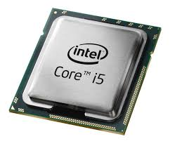

Informatika
Pozdrav!
Informatika
- Informatika je područje ljudskog djelovanja koje se bavi proučavanjem, razvojem i uporabom postupaka i uređaja za automatski prijenos i obradu podataka.
Računalo
- Računalo je složen uređaj koji služi za izvršavanje matematičkih operacija ili kontrolnih operacija koje se mogu izraziti u numeričkom ili logičkom obliku.
- Računala su sastavljena od dijelova koji obavljaju jednostavnije, jasno određene funkcije. Složeno međudjelovanje tih dijelova rezultira sposobnošću računala da obrađuje informacije.
CPU (Procesor)
- Jedan od glavnih dijelova u računalu
- Vođen zadanim programskim naredbama
- Nadzire glavni program
- Dijele se prema brzini rada

CPU (Procesor)